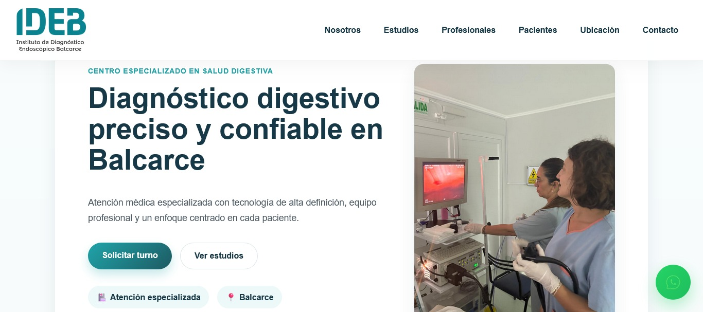

Cliente
IDEB Balcarce
Sitio institucional de un centro de diagnóstico digestivo. Rediseñé la estructura y la navegación para presentar estudios, profesionales y datos de contacto de forma clara, y sumé una sección de novedades.
HTML, CSS, JavaScript